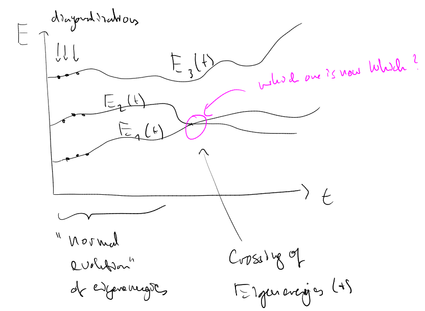

Instantaneous Eigenstates and Adiabatic approximation
posted: 2020-03-29
1 Finding an instantaneous eigenstate analytically?
Here 1, it is proposed that the SEQ
has analytic solutions: if is varying slowly (what that means exactly is explained there), the system will stay in it's time-dependent eigenstate (i.e. ), if it was at already in that state.

This claim is only justified in a narrow situation!: if from the beginning of the time evolution, there is no contribution of all the other energy eigenstates, i.e. their time-dependent coefficient in the more general (encompassing more information) wavefunction ansatz
2 More general approach: Here you see what is the condition of the adiabatic approximation!
A differential equation for each individual can be derived from the more general ansatz 2 by inserting it into the SEQ and then projecting a from the left.
It holds then (see MIT OCW)
only if the coupling/mixing term is zero, the wavefunction will remain proportional only to .
We said that the system would remain in it's initial energy eigenstate, if is changing slowly. The coupling terms can be evaluated using the instantaneous-eigenstate SEQ. It holds (after differentiating the instantaneous eigenstate SEQ and then projecting with from the left)
which means that if the time dependence of the hamiltonian is adiabatic (slowly varying ), the coupling terms will be small and the system will (given that it is prepared in an eigenstate at ) remain in it's initial instantaneous eigenstate, i.e.:
If is prepared in exactly one eigenstate and $$ {()kn}{En (t) - Ek(t)} ≈ 0\,, i.e. if and (→ adiabatic condition does not hold for level crossings), then .
3 Transition between two instantaneous energy eigenstates
i.e. evolution of the total wave function with and under a time-dependent two-level system hamiltonian plus an additional term introducing off-diagonal terms into the hamiltonian (like a coupling term of ) which makes the following process happen:
- initial state:
- contribution of the coupling term:
around the coupling term 4 contributes. The instantaneous eigenenergies of the coupled system can be easily solved exactly. Their shape can also be motivated by joining up the asymptotic eigenenergies and the eigenenergies at . Now, these do not cross, which means there is a good chance that they could fulfill the adiabatic condition. (if it is fulfilled depends on the dimensions of the box drawn in the figure, i.e. on the off-diagonal elements (more specifically ) and the coupling time scale , which is elaborated on here.)
- coupled system's instantaneous eigenstate evolves further and approaches asymptotically the instantaneous eigenstate of the uncoupled system which is orthogonal to the initial instantaneous eigenstate (adiabatic transition).
4 Pay attention to your language
- If you say adiabatic evolution you mean that the coupled system stays in it's initial instantaneous eigenstate.
- If you say adiabatic transition you still mean that the coupled system stays in it's initial instantaneous eigenstate, so those instantaneous eigenstates do not switch, cross or transition if the evolution is adiabatic. They much rather facilitate in their adiabatic evolution a total wave function that before and after the coupling takes place approaches asymptotically two different instantaneous eigenstates of the uncoupled system.
5 Resources
Footnotes:
This video provides information: https://youtu.be/0AM6arPSszI?list=PLUl4u3cNGP60Zcz8LnCDFI8RPqRhJbb4L&t=295